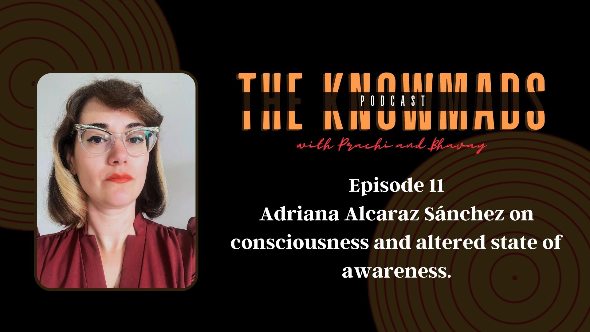
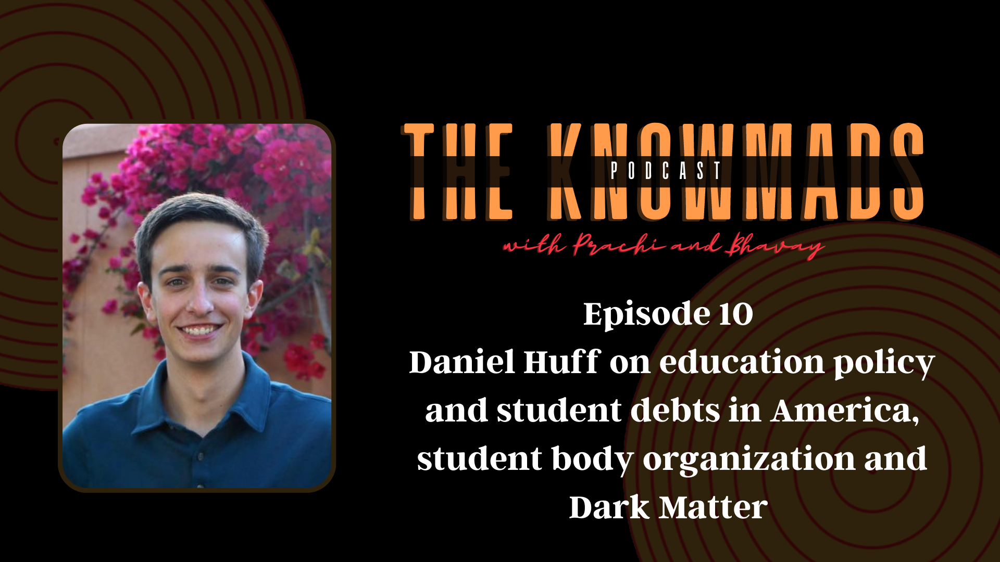
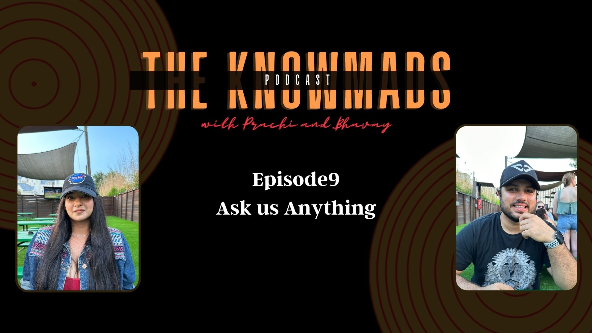
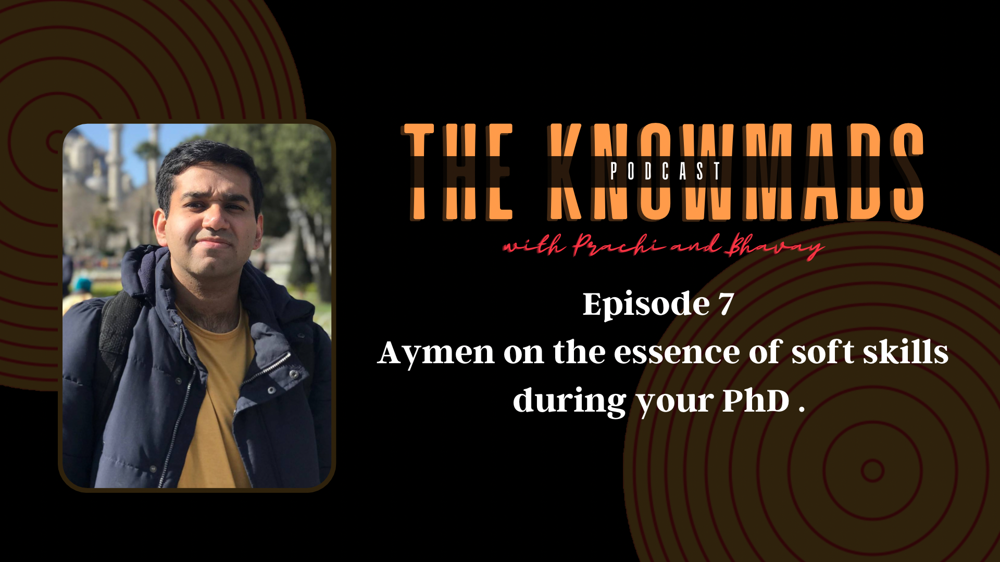
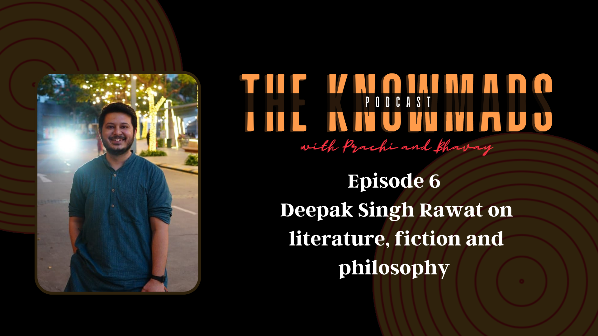
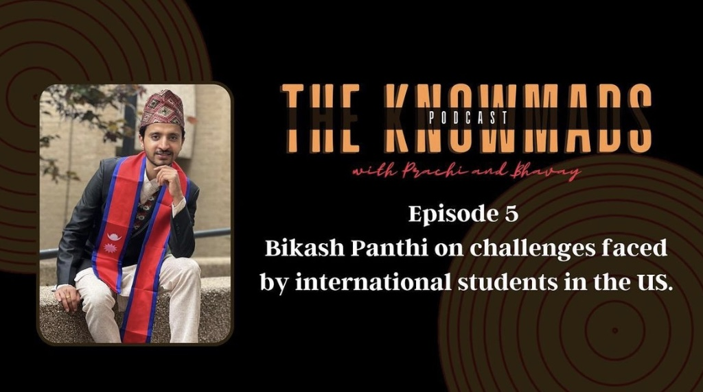
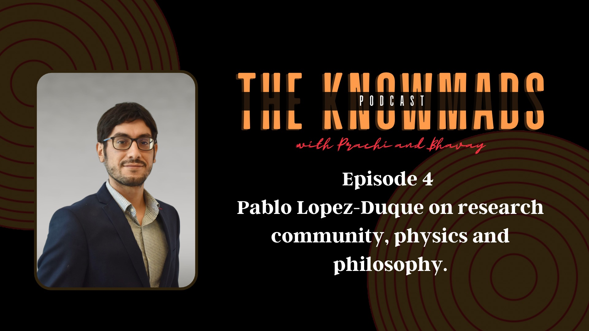
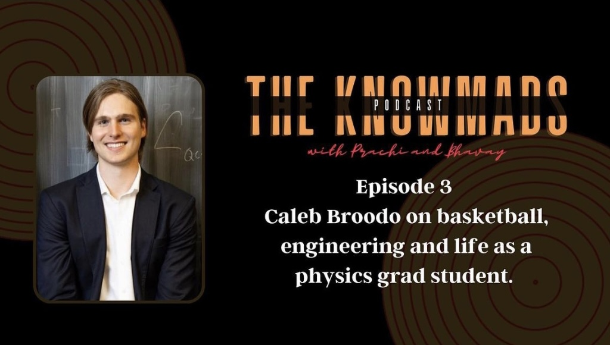
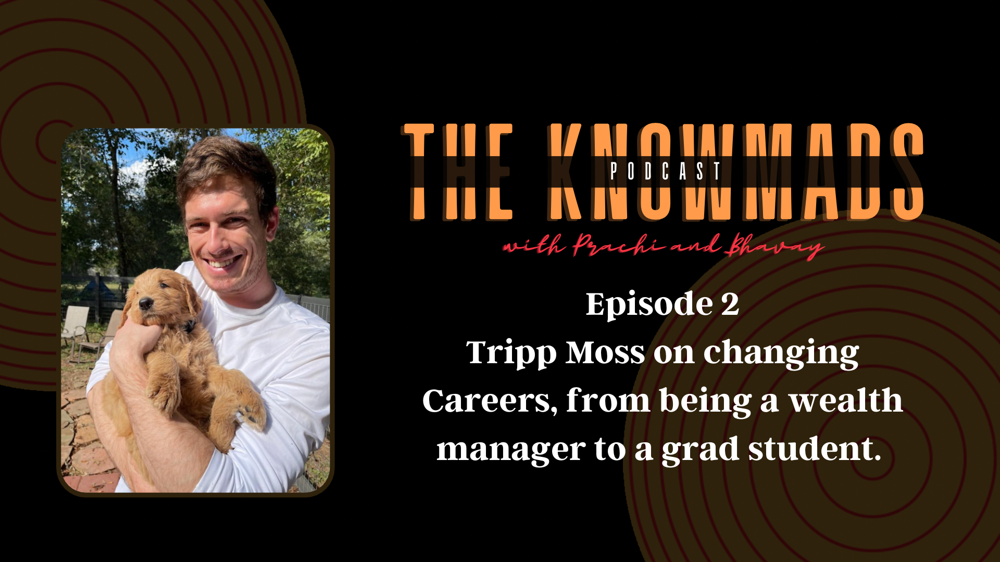

Support us on Patreon

Episode 11: Adriana Alcaraz Sánchez on consciousness and altered states of awareness.
Have you ever wondered why do we dream, are we conscious while we are sleeping? How is our brain able to generate a 3 dimensional visual image every night while our eyes are closed? Our guest today Adriana Alcaraz Sánchez is a philosopher, from University of Glasgow. In new recent work. She talks about objectless sleep awareness and compares the ideologies of western philosophy regarding consciousness while one sleeps with various different philosophical traditions from other parts of the world. This is an extremely intriguing conversation where Adrian explains some of the interesting concepts in philosophy. Since we recorded this online the quality of audio may not be the best but I assure you that, the quality of the conversation is immaculate..
Episode 10: Daniel Huff on education policy and student debts in America, student body organisations and Dark Matter
Political discussions and associated ideologies almost always resolve in thinking about national leaders and the large scale effects of policies that finally lead to geo politics. The conversations often lack the microscopic details and the penetrative effects of policies at the lowest local level, where 'in principle' it actually matters. Studies suggest that such discussions, amongst young students, who are these future leaders, are completely missing in recent times. The drive and necessity of social acceptance and the high sensitivity surrounding these topics renders the young mind extremely hesitant and sometimes completely helpless. In todays episode we aim to break this notion apart. Daniel is a 3rd year physics graduate student at the University of Houston. He holds a Bachelor of Science degree in physics and astronomy from Emory University. His research is in experimental particle physics he specializes in designing and building equipment and systems for highly sensitive particle detectors. Daniel shares with us his true opinions about recent American Educational Policies and how that affects lives of graduate students and since it's not possible to not talk about physics on The Knowmads Podcast, we talk about the current state of Dark Matter detection in the community.
Episode 9: Ask Us Anything
Right before getting into the double digits of episodes we decided to do an ask us anything episode. Although we weren't able to answer all the questions that you guys had asked we answered ones that were most interesting and kind of captured many details in the questions that we missed. We would like to thank you all for the wonderful questions and support and we're truly grateful. We'll keep doing the ask us anything episodes since it is a great way to get feedback from our audience and for us to gauge what is it that you all like. We hope you enjoy this episode it's one of the longer ones.
Episode 8: Aymen on the essence of soft skills during your PhD
During the academic stages of our lives we spend most of our time developing tools and skills that aid our research and problem solving ability and this is true for all fields of study. Now most students think that this is it! This is how you can essentially get your dream position. Well what is often missed are the soft skills that are absolutely crucial to provide us that edge over others when applying for jobs. Our guest today is almost at the end of his PhD and has effectively picked up on some of these skills throughout his journey and we understood the essence of sharing it with the world. In this conversation we talk about the effect of time management, having a platform to showcase yourself, networking, a functional relationship with your advisor and much more. It was truly an honest and candid conversation with a lot of perspectives hope you enjoy it.

Episode 7: Andrew Baldassarre on patriarchal realism and the pedagogical power of porn
Every rational human has once in their life thought about the implications of porn on oneself and the society. Gail Dines, an anti-porn sociologist and professor at Wheelock college claims in her work that due to the adverse implications of pornography, it has become a public health issue and perhaps a solution is to enforce a complete ban on the porn industry. Our guest today Andrew Baldassarre is a philosopher and his current work is in response to this idea. He believes that it is important to acknowledge the pedagogical power of porn and to harness this aspect for the betterment of our society.

Episode 6: Deepak Singh Rawat on Literature, fiction and philosophy
The path to self-exploration is very unique for everyone. Our passion, ambition and relationships play an instrumental role in shaping our lives. Our guest today found his true expression and self in literature. His humility and empathy allowed him to overcome all the challenges that life threw at him. With exploring literature, friendships, love, life and lots of laughter, this was one of the most heartfelt conversation in a very long time.
Episode 5: Bikash Panthi on Challenges Faced by International Students in the US
A lot of students all around the world leave their home country and move to another county to prsue higher education. We often talk about their learnings and success but in reality what goes behind all that enlightenment is mostly never talked about. Our guest today has a PhD in physics who left his country, his family in Nepal, to pursue his career in the states. Even though this journey was not ideal, his sanguine nature lead him to where he is now.
Episode 4: Pablo Lopez-Duque on the research community, physics and philosophy
We all know PhD one complete adventure like none other. There exist factors that we don't know anything when we begin our PhD. You can never expect how drastically the research project, advisor and the overall situation can change. Our guest today faced all such challenges and it only made him more strong, mature and confident. From having material science as his primary interest he now works in the Quantum Gravity Group.
Episode 3: Caleb Broodo on Basketball, Engineering and life as a Physics Graduate Student
In Life one finds it difficult to find what truly makes them happy. Our guest today is someone who did not have such a problem. He is a physics graduate student, but that's not how his journey began. Caleb Broodo left his basketball career, his dream to play in the NBA and his engineering pursuit to pursue his other dream of becoming a physicist.
Episode 2: Tripp Moss on Changing Careers, from being a wealth manager to a grad student
Have you ever found yourself in a situation when you you're passionate about something, you love something and you've learn to appreciate it from a very very young age but then life happened. Our guest today did his undergrad in mechanical engineering and physics but had to make a circumstantial switch to the finance industry. He then spent more than six year and found his was back to physics. This is a fun, fascinating and a very exciting episode. We hope to inspire people in similar situations and we want to let them know that they're not alone and all hope is not lost.

Episode 1: Pilot
You've already seen our Vlogs and enjoyed our nomadic side. We have been planning to do this Podcast for a very long and finally we found the time to make it happen. We finally justify the 'Know' of Knowmads and we kickstart this podcast by addressing a common question that we always get: "How do you manage your relationship being in the same profession? How do you manage your personal and professional life? and much more.." We come out completely honest about what bothers us and how we actually make it work. We would love to inspire those in a similar situation and we hope that others can also take something from this. We hope to have ya'll along this journey of exploring not just ourselves but also the world around us. We also look forward to expand our knowledge along with you. We will try to bring unique stories and research that will definitely help people in graduate school.